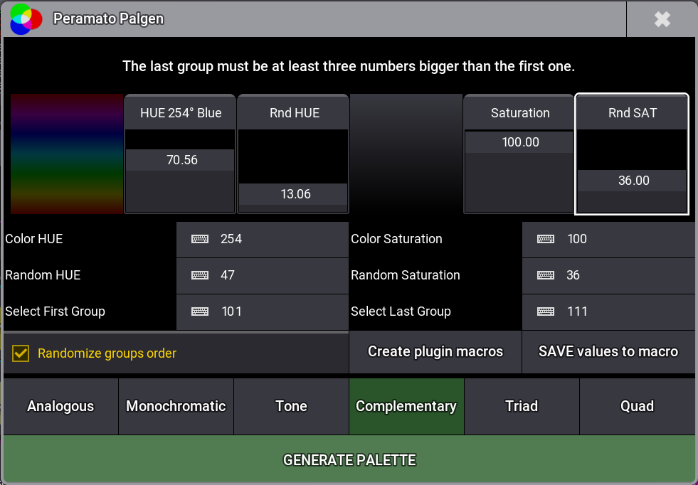
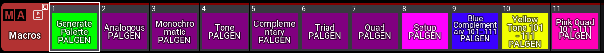

Palgen – Color Palette Generator para GrandMA3
GrandMA3
Plugin para GrandMA3 que genera paletas de color para rangos de grupos usando diferentes modos de armonía de color (análoga, complementaria, tríada, etc.). Incluye una ventana propia con faders y campos numéricos para configurar HUE, saturación, aleatoriedad y rango de grupos.